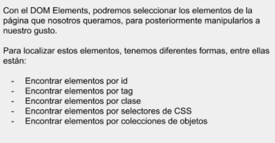

Que podemos hacer con en el DOM-Element

Las funciones más importantes que tenemos en el DOM-Element son las siguientes:
Encontrar elementos del HTML por ID
Una de las formas más sencillas de localizar un elemento del HTML en el DOM es
buscando este elemento por su ID. Un ejemplo de esto es el siguiente:
var texto = document.getElementById("texto");
Con esto, el método devolverá el elemento como un objeto, si no, la variable
texto tendrá un valor de null
Encontrar elementos del HTML por Tag (etiqueta)
Ahora vamos a ver un ejemplo de seleccionar un elemento del HTML por etiqueta, por ejemplo, todos
los elementos "p":
var x = document.getElementByTagName("p");
Con esto, habremos guardado todos los elementos con etiqueta "p" en la variable x, y ya podremos
modificarlos como queramos
Encontrar elementos del HTML por el nombre de la clase
Vamos a seguir viendo ahora un ejemplo de como localizar todos los elementos HTML con el mismo
nombre de clase:
var x = document.getElementByClassName("clase");
Utilizando el getElementByClassName() podremos seleccionar todos los elementos de una clase específica
Encontrar elementos del HTML mediante selectores CSS
Para encontrar elementos del HTML que tienen un selector CSS específico, como es una id, un valor de
atributo,
una clase, utilizaremos la siguiente sintaxis:
var x = document.querySelectorAll("p.texto");
Con esto, el programa nos devolverá una lista de todos los elementos "p" con clase texto
Encontrar elementos del HTML por Coleccion de Objetos (Array)
Finalmente, podemos encontrar elementos que esten dentro de una colección de objetos con el siguiente
método:
var x = document.forms["elementos"];
Utilizando este método forms, habremos guardado todos los elementos en una variable, ahora lo que
tendríamos que hacer
es mostrar cada elemento. Esto lo podriamos hacer con un bucle
Ejemplo del getElementById()